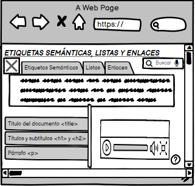

Las etiquetas semánticas son aquellas que dan un significado a las partes del documento
La estructura de un documento HTML es un lenguaje de marcas, que consta de texto y define el contenido real de una página web, el cual debe contener marcas especiales conocidas como las etiquetas que permiten dar un significado al texto o contenido de la misma.
Una etiqueta se clasifica como semántica, sí sirve para indicar que son y cual es el significado de los elementos que contienen adentro. Estas han ganado mucha importancia en el marco del HTML y de la composición de un documento web, ayudando a los motores de busqueda como Google a indexar de forma correcta los contenidos de un sitio.
MOCKUP DISEÑO DE LA PAGINA WEB
Imagen(autor propia) - 08 de marzo de 2021
REFERENCIA BIBLIOGRÁFICAS
Terán Anciano, J. (2016). Manual de Introducción al lenguaje HTML. Formación para el Empleo. Editorial CEP, S.L. Recuperad de https://elibro-net.bibliotecavirtual.unad.edu.co/es/ereader/unad/50964?page=134 Recio García, J. A. (2016). HTML5, CSS3 y JQuery: curso práctico. RA-MA Editorial. (Pág. 52 a 108) Recuperado de https://elibro-net.bibliotecavirtual.unad.edu.co/es/ereader/unad/106494?page=52 Miguel Angel Alvarez, https://desarrolloweb.com/articulos/etiquetas-semanticas-html5.html
https://es.slideshare.net/pandres/etiquetas-semnticas-html